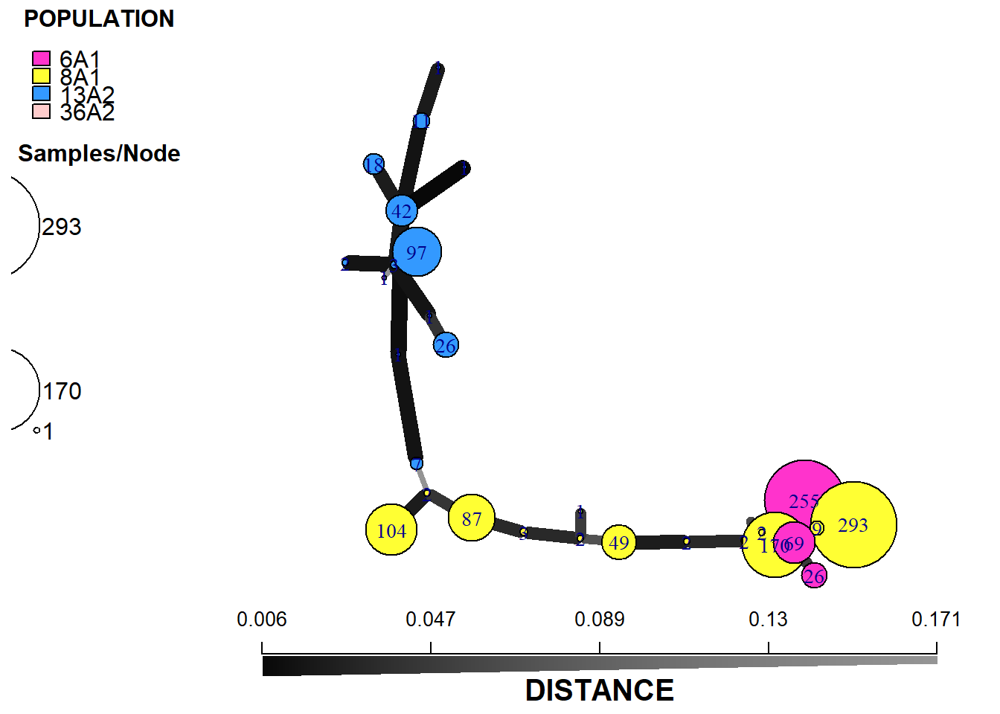
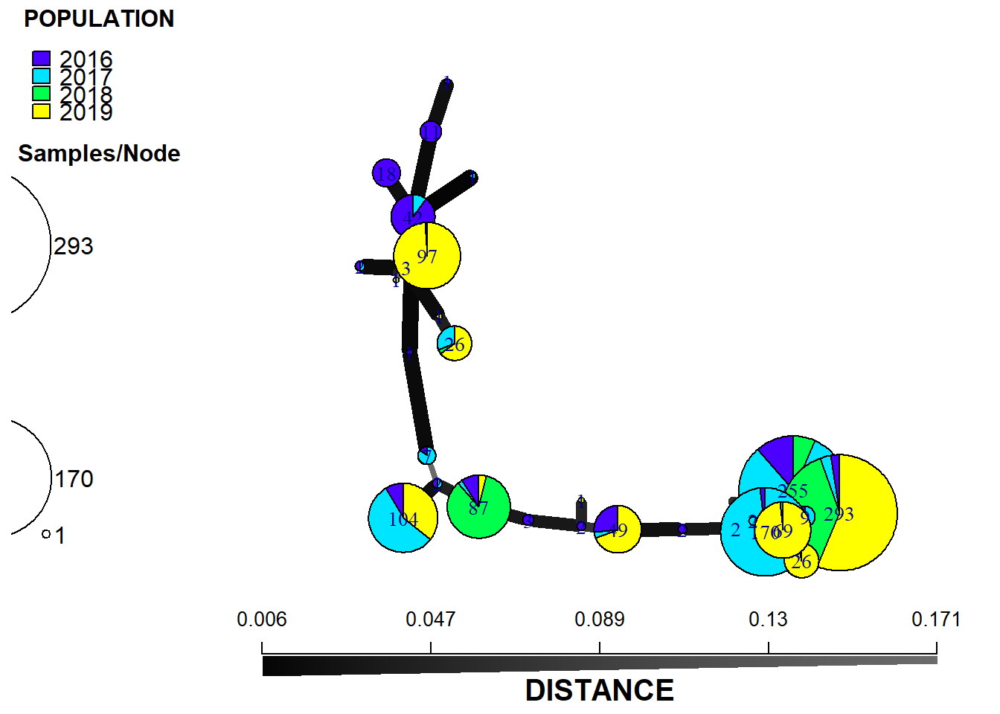

Pop
Popoulation analysis
After gaining insight into population structure we can move onto the analysis of
Load packages
list.of.packages <-
c(
"tidyverse",
"devtools",
"here",
"readxl",
"poppr",
"egg"
)
new.packages <-
list.of.packages[!(list.of.packages %in% installed.packages()[, "Package"])]
#Download packages that are not already present in the library
if (length(new.packages))
install.packages(new.packages)
packages_load <-
lapply(list.of.packages, require, character.only = TRUE)
#Print warning if there is a problem with installing/loading some of packages
if (any(as.numeric(packages_load) == 0)) {
warning(paste("Package/s: ", paste(list.of.packages[packages_load != TRUE], sep = ", "), "not loaded!"))
} else {
print("All packages were successfully loaded.")
}## [1] "All packages were successfully loaded."rm(list.of.packages, new.packages, packages_load)
#if instal is not working try
#install.packages("package_name", repos = c(CRAN="https://cran.r-project.org/"))Data import/preparation
fin <- readRDS(file = here::here("data", "gen data", "final", "gendata.rds") )Prepare the data in genalex format.
fin <-
unite(fin, "Ind", idd, year, remove = F)
fin <-
unite(fin, "Pop", variety, Genotype, year)
popcol <- match("Pop",names(fin))
idcol <- match("Ind",names(fin))
gen <-
fin[ , c(idcol,popcol,match("D13",names(fin)):match("X__24",names(fin)))]
path <- here::here("data", "gen data", "final", "pop.csv")
data.frame(ssr = c(12,"PInf_Ireland"),
samples = nrow(gen),
pop = length(unique(fin$Pop)))write.table(data.frame(ssr = 12, samples = nrow(gen), pop = length(unique(fin$Pop))),
path,
sep=",", col.names=FALSE, row.names = FALSE)
write.table( "PInf_Ireland",
path,
sep = ",", row.names = FALSE,
col.names = FALSE, append = T)
names(gen)[grep("X__", names(gen))] <- ""
write.table(gen,
path,
sep = ",", row.names = FALSE,
col.names = !file.exists("myDF.csv"), append = T)## Warning in write.table(gen, path, sep = ",", row.names = FALSE, col.names
## = !file.exists("myDF.csv"), : appending column names to fileBruvo charts
path <- here::here("data", "gen data", "final", "pop.csv")
monpop <- read.genalex(path, ploidy = 3)
splitStrata(monpop) <- ~variety/genotype/year
monpop##
## This is a genclone object
## -------------------------
## Genotype information:
##
## 29 original multilocus genotypes
## 1315 triploid individuals
## 12 codominant loci
##
## Population information:
##
## 3 strata - variety, genotype, year
## 61 populations defined -
## KE_6A1_2016, KE_8A1_2016, SE_6A1_2016, ..., CL_8A1_2019, SM_13A2_2019, SM_6A1_2019 monpop$strata<-
monpop$strata %>%
mutate(genotype = ifelse( genotype == "8A1-1","EU_8_1_A1",
ifelse(genotype == "6A1","EU_6_A1",
ifelse(genotype == "13A2","EU_13_A2",
ifelse(genotype == "8A1","EU_8_A1","" )))))
# imsn()
monpop_sub <- popsub(monpop, blacklist = character(0))
monpop_dist <- diss.dist(monpop_sub, percent = FALSE, mat = FALSE)
min_span_net <- poppr.msn(monpop_sub, monpop_dist, showplot = FALSE, include.ties = TRUE)
#Bruvo distance Genotype
setPop(monpop) <- ~genotype
monpop_sub <- popsub(monpop, blacklist = character(0))
min_span_net <- bruvo.msn(monpop_sub, replen = c(1, 2, 3), add = TRUE, loss = TRUE, showplot = FALSE, include.ties = TRUE)## Warning in bruvo.dist(cgid, replen = replen, add = add, loss = loss):
## --------------------------------------------------------------
## !!! ALERT !!!
##
## This warning will become an ERROR in future versions of poppr.
## Please define your repeat lengths to avoid this error.
## --------------------------------------------------------------
##
## Repeat length vector for loci is not equal to the number of loci represented.
## Estimating repeat lengths from data:
## c(2, 4, 2, 4, 6, 3, 2, 2, 4, 2, 6, 14)set.seed(1000)
cbbPalette <- c ("#ff33cc", "#ffff33","#3399ff","#F3DA60") min_span_net <- bruvo.msn(monpop, replen = c(1, 2, 3), add = TRUE, loss = TRUE, showplot = FALSE, include.ties = TRUE)## Warning in bruvo.dist(cgid, replen = replen, add = add, loss = loss):
## --------------------------------------------------------------
## !!! ALERT !!!
##
## This warning will become an ERROR in future versions of poppr.
## Please define your repeat lengths to avoid this error.
## --------------------------------------------------------------
##
## Repeat length vector for loci is not equal to the number of loci represented.
## Estimating repeat lengths from data:
## c(2, 4, 2, 4, 6, 3, 2, 2, 4, 2, 6, 14)plot_poppr_msn(monpop,
min_span_net,
mlg = FALSE,
gadj = 7,
nodescale = 4,
nodelab = 1,
palette =cbbPalette,
cutoff = 11,
inds = "none",
quantiles = FALSE,
beforecut = TRUE,
pop.leg = TRUE,
size.leg = FALSE,
scale.leg = TRUE,
layfun = igraph::layout_nicely)
setPop(monpop) <- ~year
monpop_sub <- popsub(monpop, blacklist = character(0))
min_span_net <- bruvo.msn(monpop_sub, replen = c(1, 2, 3), add = TRUE, loss = TRUE, showplot = FALSE, include.ties = TRUE)## Warning in bruvo.dist(cgid, replen = replen, add = add, loss = loss):
## --------------------------------------------------------------
## !!! ALERT !!!
##
## This warning will become an ERROR in future versions of poppr.
## Please define your repeat lengths to avoid this error.
## --------------------------------------------------------------
##
## Repeat length vector for loci is not equal to the number of loci represented.
## Estimating repeat lengths from data:
## c(2, 4, 2, 4, 6, 3, 2, 2, 4, 2, 6, 14)set.seed(1000)
cbbPalette <- c ("#ff33cc", "#ffff33","#3399ff")
plot_poppr_msn(
monpop,
min_span_net,
mlg = T,
gadj = 4,
inds = "none",
wscale = TRUE,
nodescale = 8,
nodelab = 0.15,
palette = cbbPalette,
cutoff = 0.9,
quantiles = FALSE,
beforecut = TRUE,
layfun = igraph::layout_nicely
)## Warning in palette_parser(pal, length(poppr_msn$populations),
## poppr_msn$populations): insufficient color palette supplied. Using
## topo.colors().
dev.copy(png,filename=here::here("results", "gen","bruvo", "Year.png"),
width = 1000, height= 700 );## png
## 3dev.off ()## png
## 2setPop(monpop) <- ~variety
monpop_sub <- popsub(monpop, blacklist = character(0))
min_span_net <- bruvo.msn(monpop_sub, replen = c(1, 2, 3), add = TRUE, loss = TRUE, showplot = FALSE, include.ties = TRUE)## Warning in bruvo.dist(cgid, replen = replen, add = add, loss = loss):
## --------------------------------------------------------------
## !!! ALERT !!!
##
## This warning will become an ERROR in future versions of poppr.
## Please define your repeat lengths to avoid this error.
## --------------------------------------------------------------
##
## Repeat length vector for loci is not equal to the number of loci represented.
## Estimating repeat lengths from data:
## c(2, 4, 2, 4, 6, 3, 2, 2, 4, 2, 6, 14)set.seed(1000)
plot_poppr_msn(monpop,
min_span_net,
inds = "none",
mlg = FALSE,
gadj = 6,
nodescale = 8,
palette = rainbow,
cutoff = 0.2,
quantiles = FALSE,
beforecut = TRUE,
pop.leg = TRUE,
size.leg = TRUE,
scale.leg = TRUE,
layfun = igraph::layout_nicely)setPop(monpop) <- ~year/genotype
monpop_sub <- popsub(monpop, blacklist = character(0))
min_span_net <- bruvo.msn(monpop_sub, replen = c(1, 2, 3), add = TRUE, loss = TRUE, showplot = FALSE, include.ties = TRUE)## Warning in bruvo.dist(cgid, replen = replen, add = add, loss = loss):
## --------------------------------------------------------------
## !!! ALERT !!!
##
## This warning will become an ERROR in future versions of poppr.
## Please define your repeat lengths to avoid this error.
## --------------------------------------------------------------
##
## Repeat length vector for loci is not equal to the number of loci represented.
## Estimating repeat lengths from data:
## c(2, 4, 2, 4, 6, 3, 2, 2, 4, 2, 6, 14)set.seed(1000)
plot_poppr_msn(monpop,
min_span_net,
inds = "none",
mlg = FALSE,
gadj = 6,
nodescale = 8,
palette = rainbow,
cutoff = 0.2,
quantiles = FALSE,
beforecut = TRUE,
pop.leg = TRUE,
size.leg = TRUE,
scale.leg = TRUE,
layfun = igraph::layout_nicely)set.seed(999)
setPop(monpop) <- ~genotype
#Determine the OS to assign apropriate character string for parallel processing
parallel_proc <-
ifelse(Sys.info()['sysname'] == "Windows", "snow", "multicore")
pramx <- xvalDapc(tab(monpop, NA.method = "mean"), pop(monpop))
#HArd to determine the peek number of PC
set.seed(999)
system.time(pramx <- xvalDapc(tab(monpop, NA.method = "mean"), pop(monpop),
n.pca = 10:20, n.rep = 1000,
parallel = parallel_proc,
ncpus = 4L))## Warning in KernSmooth::bkde2D(x, bandwidth = bandwidth, gridsize = nbin, :
## Binning grid too coarse for current (small) bandwidth: consider increasing
## 'gridsize'
## user system elapsed
## 1.20 2.63 341.87pramx[-1]## $`Median and Confidence Interval for Random Chance`
## 2.5% 50% 97.5%
## 0.2238813 0.2484479 0.2748249
##
## $`Mean Successful Assignment by Number of PCs of PCA`
## 10 11 12 13 14 15 16
## 0.9995619 0.9995682 0.9995530 0.9994129 0.9980915 0.9981387 0.9988902
## 17 18 19 20
## 0.9985619 0.9984385 0.9980354 0.9938687
##
## $`Number of PCs Achieving Highest Mean Success`
## [1] "11"
##
## $`Root Mean Squared Error by Number of PCs of PCA`
## 10 11 12 13 14 15
## 0.002129688 0.001549926 0.001596825 0.003051013 0.006583163 0.006070264
## 16 17 18 19 20
## 0.002179265 0.004342223 0.005273447 0.006871054 0.033405665
##
## $`Number of PCs Achieving Lowest MSE`
## [1] "11"
##
## $DAPC
## #################################################
## # Discriminant Analysis of Principal Components #
## #################################################
## class: dapc
## $call: dapc.data.frame(x = as.data.frame(x), grp = ..1, n.pca = ..2,
## n.da = ..3)
##
## $n.pca: 11 first PCs of PCA used
## $n.da: 3 discriminant functions saved
## $var (proportion of conserved variance): 0.993
##
## $eig (eigenvalues): 2612000 193100 13470 vector length content
## 1 $eig 3 eigenvalues
## 2 $grp 1315 prior group assignment
## 3 $prior 4 prior group probabilities
## 4 $assign 1315 posterior group assignment
## 5 $pca.cent 60 centring vector of PCA
## 6 $pca.norm 60 scaling vector of PCA
## 7 $pca.eig 23 eigenvalues of PCA
##
## data.frame nrow ncol
## 1 $tab 1315 11
## 2 $means 4 11
## 3 $loadings 11 3
## 4 $ind.coord 1315 3
## 5 $grp.coord 4 3
## 6 $posterior 1315 4
## 7 $pca.loadings 60 11
## 8 $var.contr 60 3
## content
## 1 retained PCs of PCA
## 2 group means
## 3 loadings of variables
## 4 coordinates of individuals (principal components)
## 5 coordinates of groups
## 6 posterior membership probabilities
## 7 PCA loadings of original variables
## 8 contribution of original variablespramx[-1]$`Number of PCs Achieving Highest Mean Success`## [1] "11"#
scatter(pramx$DAPC,
# col = other(monpop)$comparePal,
cex =2 ,
legend = TRUE,
clabel = FALSE,
posi.leg = "bottomleft", scree.pca = TRUE,
posi.pca = "topright",
cleg = .9, xax = 1,
yax = 2, inset.solid = 1)
dev.copy(png,filename=here::here("results", "gen","dapc", "genotype.png"),
width = 700, height= 700);## png
## 3dev.off ()## png
## 2scatter(pramx$DAPC,1,1,
# col=myCol,
bg="white",
scree.da=FALSE, legend=TRUE, solid=.4)